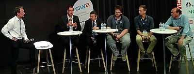
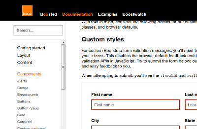

Christian Paterson présente OSAi (crédit photo : Groupe de travail Logiciel Libre)

Table ronde accessibilité (crédit photo : Daniele Gagliardi) — De gauche à droite : Stéphane Deschamps (Orange), Christian Paterson (Orange), Antoine Cao (DINSIC), Aurélien Levy (Temesis), Alessandro Portosa (Engineering Group), David Monnehay (Atalan)Exemple avec la police Accessible DfA : des caractères impossibles à confondre

Boosted documente les éléments et comment les rendre accessibles au mieux